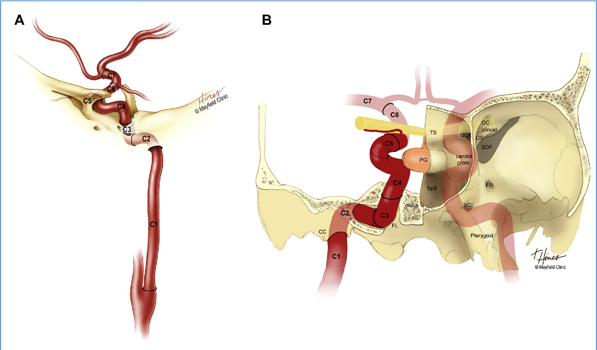
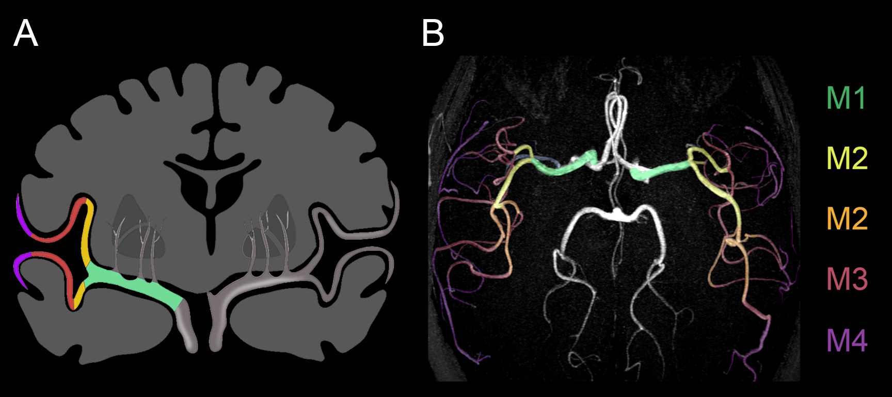

Notions théoriques
L’imagerie de l’AVC aigu
Dans un premier temps, un scan cérébral sans contraste endoveineux est effectué pour :
- Exclure une cause hémorragique
- Identifier une étiologie alternative
- Détecter des changements ischémiques précoces
- Estimer l’étendue du territoire atteint par l’ischémie
Si aucune cause non-ischémique n’est identifiée ou qu’il y a des changements ischémiques précoces, la poursuite de l’investigation avec un angioscan cérébral a pour objectif d’identifier un site d’occlusion.
Selon l’emplacement de l’occlusion, un traitement endovasculaire peut être envisageable.
Le présent module se concentrera sur l’identification des changements ischémiques précoces et du site d’occlusion artérielle, lorsque présente.
Des articles d’intérêt:
Imaging assessment of acute ischaemic stroke: a review of radiological methods
Canadian Best Practice Neuroimaging Guidelines
Un survol de la sémiologie radiologique de l’ischémie cérébrale détaille également la sémiologie plus tardive après la survenue initiale de l’ischémie.
Score ASPECT
Le score ASPECT a été développé pour estimer l’étendue des changements ischémiques aigus en tomodensitométrie, et est souvent utilisé par les neurologues. Ce lien de l’Université de Calgary offre un module d’entraînement pour déterminer les score ASPECT.
Nous vous recommandons d’utiliser ce module pour vous entraîner à détecter les changements ischémiques aigus.
Questions
Nommez quelques signes radiologiques d’ischémie précoce en TDM.
Réponse
- Hypodensité causant une perte de différenciation de la matière blanche et grise
- Signe de ruban insulaire
- Effacement des contours des noyaux gris centraux
- Perte de différenciation cortico-sous-corticale
- Effacement asymétrique des sillons lié à un œdème associé
Quel est un signe important d’occlusion artérielle en TDM?
Réponse
- Signe de artère hyperdense
- Alors que très spécifique (90%), la sensibilité est faible (50%)
Quel fenêtrage vous semble optimal pour la détection d’une perte de différenciation cortico-sous-corticale?
Réponse
W:35 L :35.
L’utilisation d’une touche de raccourci (hotkey) avec une fenêtre ‘’AVC’’ avec des valeurs entre W:35 L:35 et W:40 L:40 est une bonne idée pour optimiser le fenêtrage rapidement.
Quelles sont les critères d’inclusion pour les patients qui peuvent être traités dans la fenêtre 0 - 4.5h?
Réponse
- Début des symptômes depuis moins de 4.5h
- Absence d’hémorragie intracrânienne (contre-indication absolu)
- Pas de contre-indication médicale pour la thrombolyse
- ASPECT ≥ 6 (contre-indication relatif)
- Un infarctus de grande taille augmente le risque d’hémorragie
Quel patient peut bénéficier de la thrombectomie?
Réponse
- AVC avec occlusion démontrée de la carotide interne ou de M1 (M2 proximal et tronc basilaire également candidats en pratique)
- ASPECTS ≥ 6 (contre-indication relatif)
- Délai de ≤ 6 heures et NIH stroke scale (NIHSS) ≥ 6
- IMPORTANT – Si les symptômes ont commencé après 6h, un SCAN de perfusion pourrait stratifier le patient pour une thrombectomie tardive (entre 6-24 heures)
- Alors que c’est ce que dit la littérature, en pratique si le patient a un tableau clinique approprié, une thrombectomie entre 6-24 heures est souvent effectuée sans SCAN de perfusion.
- IMPORTANT – Si les symptômes ont commencé après 6h, un SCAN de perfusion pourrait stratifier le patient pour une thrombectomie tardive (entre 6-24 heures)
Quel sont les critères pour un patient qui peut beneficier d’une thrombectomie tardive entre 6-24 heures (question bonus)?
Réponse
- Comme mentionné précédemment, la decision est souvent clinique mais les critères décrits dans les essais cliniques sont disponibles icis
- Ces critères représentent du tissu cérébral récupérable (pénombre)
- Les paramètres exactes pour définir l’infarctus «core» versus la pénombre dépendent du logiciel utilisé, mais le concept est le suivant
- Infarctus «core»
- Mean transit time (MTT) augmenté
- Cerebral blood volume (CBV) très diminué
- Cerebral blood flow (CBF) très diminué
- Pénombre
- Mean transit time (MTT) augmenté
- Diminution moderée du cerebral blood volume (CBV)
- Cerebral blood flow (CBF) normal ou presque normal
- Infarctus «core»
Anatomie vasculaire
Artère carotide interne
L’artère carotide interne est le plus souvent subdivisée selon la classification de Bouthiller, qui la sépare en sept segments, de C1 à C7.
Pouvez-vous nommer chaque segment, et les structures anatomiques qui les délimitent?
Réponse
| Segment | Description | |
|---|---|---|
| C1 | Cervical | Origine à la bifurcation de la carotide commune et se termine en regard du processus vaginal de l’os temporal. |
| C2 | Pétreux | Débute au processus vaginal de l’os temporal et se termine à la marge du canal carotidien (ligne tracée postérolatéralement au foramen lacerum). |
| C3 | Lacerum | Débute à la marge du canal carotidien (ligne tracée postérolatéralement au foramen lacerum) et se termine en regard du ligament pétrolingual. |
| C4 | Caverneux | Débute au ligament pétrolingual et se termine à l’anneau dural proximal. |
| C5 | Clinoïde | Débute en regard de l’anneau dural proximal et se termine à l’anneau dural distal. |
| C6 | Ophtalmique | Débute à l’anneau dural distal et se termine à l’origine de l’artère cérébrale postérieure (ou de l’artère communicante postérieure). |
| C7 | Terminal | Débute à l’origine de l’artère cérébrale postérieure (ou de l’artère communicante postérieure) et se termine à la bifurcation des artères cérébrale moyenne et antérieure. |
Source : Segments of the Internal Carotid Artery: A New Classification. Neurosurgery. 38(3):425-433, March 1996. Bouthillier, Alain M.D.; van Loveren, Harry R. M.D.; Keller, Jeffrey T. Ph.D.

A. Projection latérale de l’artère carotide interne. Segments C1 (cervical), C2 (pétreux), C3 (lacerum), C4 (caverneux), C5 (clinoïde) C6 (ophtalmique) et C7 (terminal). B. Vue de face des différents segments.
Source: DePowell, John J., Sebastien C. Froelich, Lee A. Zimmer, James L. Leach, Alexandre A. Karkas, Philip V. Theodosopoulos and Jeffrey T. Keller. “Segments of the internal carotid artery during endoscopic transnasal and open cranial approaches: can a uniform nomenclature apply to both?” World neurosurgery 82 6 Suppl (2014): S66-71.
Artère cérébrale moyenne
L’artère cérébrale moyenne est séparée en 4 classes de segments.
Pouvez-vous nommer les repères anatomiques limitant chaque segment?
Réponse
| Segment | Description |
|---|---|
| M1 | Certains considèrent la première bifurcation de l’artère cérébrale moyenne pour délimiter l’extrémité distale des segments M1 et le commencement des segments M2. Selon la définition de Rhoton et al., utilisée en neurochirurgie et en neuroradiologie interventionnelle, le segment M2 commence à la première coudure (tournant à 90 degrés), soit vis-à-vis le limen insulaire, que ce soit avant ou après un premier embranchement artériel. |
| M2 | La première coudure à 90 degrés en regard du limen insulaire marque le début des segments M2, qui se terminent en regard du sillon operculaire (limites de l’insula). |
| M3 | Les segments M3 débutent au sillon operculaire, où les branches de l’artère cérébrale moyenne vont se recourber pour suivre la surface du cortex operculaire des lobes frontaux, pariétaux et temporaux, et émerger dans la vallée sylvienne. |
| M4 | Les segments M4 désignent les segments artériels retrouvés à la surface corticale hémisphérique, donc distalement à l’émergence hors de la vallée sylvienne. |
Source : Gibo, H., Carver, C. C., Rhoton, A. L., Lenkey, C., & Mitchell, R. J. (1981). Microsurgical anatomy of the middle cerebral artery, Journal of Neurosurgery, 54(2), 151-169.

Crédits : Guylaine Gevry (Gestionnaire de projet, CRCHUM, laboratoire de recherche de NRI) coronal, William Tanguay axial
Concepts techniques – Protocole d’imagerie en AVC aigu
Phases d’acquisition:
Quel est le concept général de notre protocole d’AVC ici au CHUM?
Réponse
- Tout d’abord, un SCAN cérébral sans contraste
- Pour les images post-contraste, on commence avec l’imagerie artérielle du cerveau pour maximiser l’évaluation diagnostique de l’occlusion artérielle
- Ensuite, on fais l’imagerie artérielle cervicale pour évaluer les vaisseaux du cou
- Enfin, on fais l’imagerie artérielle tardive du cerveau pour évaluer les collatérales et caractériser les zones d’occlusion quasi totale
Au scanner, le processus est le suivant:
Après acquisition du scan C-, l’angioscan débute par l’injection endoveineuse de produit de contraste iodé par injecteur automatique. Un monitoring des carotides sous-pétreuses permet un déclenchement manuel à l’opacification des carotides (T=0).
Combien de secondes environ après l’injection de contraste intraveineux les acquisitions suivantes sont-elles acquises (dépendant l’anatomie)?
Réponse
- Phase artérielle du cerveau = environs 15s
- Phase artérielle cervicale = environs 20s
- Phase artérielle tardive du cerveau = environs 25s
Quelle est une phase que d’autres institutions incluront parfois dans leurs protocoles?
Réponse
- Certaines instutions font une acquisition veineuse supplémentaire du cerveau (environ 45s) pour évaluer davantage les collatérales
Reconstruction
MPR & MIP
Pouvez-vous expliquer les différences entre ces deux types de reconstruction d’image à partir des données natives de tomodensitométrie?
Réponse
L’image de gauche est produite à partir d’une reconstruction multiplanaire (MPR) du volume de données natives, dans un plan de coupe différent de l’acquisition initiale (axiale), mais de même épaisseur dans l’axe d’acquisition (par exemple, 1mm). Pour le cerveau, le plan de reconstruction est celui du planum sphenoïdale, légèrement oblique par rapport au plan axial natif.
L’image de droite est produite en combinant plusieurs coupes sur une épaisseur plus grande dans l’axe d’acquisition (par exemple, 5mm), en utilisant la valeur d’intensité maximale pour toute l’épaisseur (MIP, maximal intensity projection). En utilisant la valeur d’intensité minimale pour toute l’épaisseur, on peut créer une image MinIP (minimal intensity projection)
Voici une illustration simplifiée de la différence entre la reconstruction multiplanaire en coupe mince (MPR) et les reconstructions en coupes épaisses.
MIP: maximal intensity projection. MinIP: minimal intensity projection. AIP: average intensity projection.
Soustraction
Ici au CHUM, nous avons franchi une nouvelle étape pour fournir des images soustraites numériquement entre les acquisitions artérielles et différées.
Ensuite, après débruitage et seuillage est effectué pour créer les cartes de soustraction de couleur pour mieux illustrer les zones de rehaussement retardé.
Sur la photo ci-dessus, deux exemples pertinents avec à la fois le MIP veineux retardé et sa carte de couleurs de soustraction correspondante. La rangée A illustre une occlusion M2 proximale tandis que la rangée B montre une occlusion M2/M3 plus distale. A noter la plus grande zone de rehaussement retardé en cas d’occlusion proximale (rang A).
Prochaine Étape
Vous avez complété avec succès la partie théorique du module d’apprentissage.
Il est maintenant temps de mettre ces connaissances à l’épreuve avec une deuxième série de cas plus difficiles !